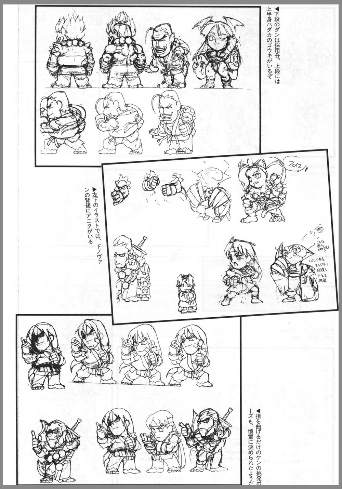
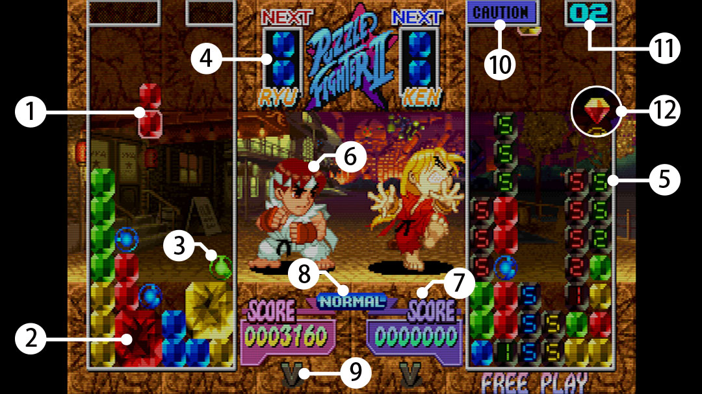

Development History
When development on Night Warriors: Darkstalkers' Revenge, Cyberbots: Full Metal Madness and Street Fighter Alpha 2 was completed, development began on Super Puzzle Fighter II Turbo. On developing the characters and backgrounds in the game, the artists used their appearances from their respective games as reference to draw the super-deformed versions. 
The Playstation, Sega Saturn, Game Boy Advance, and Dreamcast versions of the game feature a new challenge mode called "Street Puzzle", in which the player must defeat specific characters to unlock additional content, such as alternate character palletes, win icons, and more. Tempora quam, obcaecati officia provident aliquam eaque vero excepturi. Maxime obcaecati hic necessitatibus ratione rem. Aliquid nostrum modi eligendi similique autem aperiam.
The game's music is scored by Tatsuro Suzuki, as well as Isao Abe, Yuko Takehara, Syun Nishigaki, Setsuo Yamamoto, and Takayuki Iwai. The game consists of special arranged versions and mixes of music themes from the represented games, as well as some original music. The soundtrack album for the game was released on January, 22 1997 in Japan only, which also includes the soundtrack for Quiz Nanairo Dreams.
Get Good!
Beat your opponent by wisely stacking and breaking your own gems to send Counter Gems at them. If you can get their gems to stack up to the top of their gem column (third column from the right) first, you win!
-
Normal Gem
These are the regular gems that fall. Same-colored gems can combine with each other vertically and horizontally. -
Power Gem
When four or more same-colored Normal Gems combine with each other in a square or rectangle shape, it creates a Power Gem. The bigger the Power Gem, the more Counter Gems you send to your opponent when you break it. -
Crash Gem
Drop these next to other gems of the same color to break all attached gems. If you can link multiple Crash Gems to break gems at the same time, you'll send more Counter Gems to your opponent than normal. -
Next Gem
This shows you the next gem that will fall. It will fall once you have finished placing the currently falling gem. -
Counter Gem
Counter Gems fall on you or your opponent once you have reached certain score totals by breaking gems. When you break any other type of gem, any Counter Gems touching the broken gems will also disappear, no matter their color. Counter Gems will turn into Normal Gems of the same color once their timers reach 0. The timer goes down by 1 with each new placement of a falling gem. -
Character
The character you are currently using. -
Score
Your current score. -
Mode Indicator
The current game mode. -
Win Marker
The number of rounds you have won. -
Counter Gem Warning
Icons appear here to indicate when Counter Gems are incoming from the opponent. -
Incoming Counter Gems
This number indicates the number of incoming Counter Gems. -
Rainbow Gem
A Rainbow Gem is a special gem that appears for every 25 gems dropped. Placing a Rainbow Gem on top of another gem will break all gems of the same color, regardless of whether they are connected. The Rainbow Gem will disappear and nothing will happen if it is placed on the ground.
You can find more information about the game in its official electronic manual.
The Roster
K en's deal is that he waits until the last minute to do everything and kill you at one moment. This makes it hard for novices to play as him because he requires so much patience, speed, and attention. However, the payoff is definitely worth it. Unlike Ken, Donovan is a much easier character to learn and practice with while still remaining top tier. Donovan's block pattern really halts his opponent's progress, making it hard for them to pull off chains and counterattacks, giving players enough time to stack on the damage. It's a gradual process, but one with results. These two are sharing a spot due to having mirror image block patterns, and therefore having the same strategy involved, i.e being nearly impossible to counter and being generally ruthless. They also have the same [major] weakness, in that they only send 70% of garbage gems to their opponent compared to any other fighter. For a long time Devilot was considered to be bottom tier while Akuma still stayed on top, but since they're practically the same character, it was probably an appearance thing. Morrigan has an incredibly flexible playstyle that allows for both chip damage and one-shot attacks, although she's not the best at both. However, that's not a bad thing, as her strong block pattern makes it hard for her opponent to counter her, which gives Morrigan players plenty of room to formulate new and unorthodox strategies to hinder the opposition even further. Sakura's block pattern is the majority of Ken's with a splash of Ryu on the side. This gives her a straight forward playstyle that just makes the cut to be in her favor. Where as the majority of the time it's better to be harder to counter against then better at countering, Sakura does the most what she can in a coast-to-boast kind of way. "Very sneaky sis", if you will. To be continued!
Awesome Secrets
The diamond is intended to deal only 50% of the damage you’d do by breaking the same pieces without the diamond. However, there’s a glitch that allows you to bypass this and deal 100% of the damage. In order to perform this “diamond trick,” you must first find a place on your playfield where you can rotate your diamond-piece 180 degrees with just one button press (rather than the usual two presses). For example, if you have a lot of blocks in columns 2 and 4, you could put the diamond-piece in the well in column 3, so that it has no room to rotate horizontally. At this point, hold down on the d-pad, then when the piece touches down (with diamond on top), press rotate at the last moment. The diamond will rotate to the bottom position, and it will appear to break blocks as it always does, but it will do enormous damage because this technique avoids the 50% penalty.